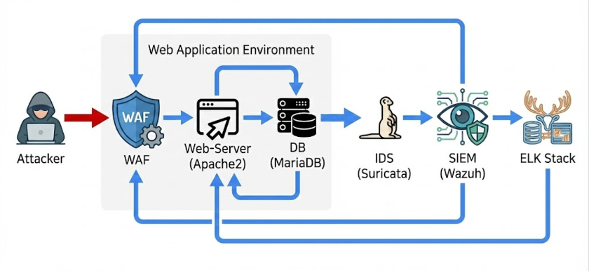
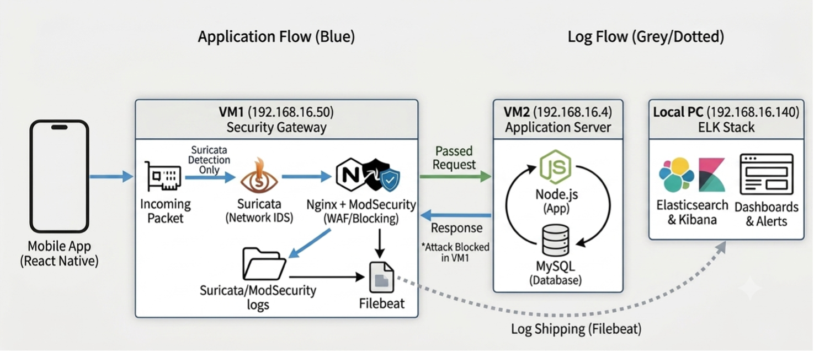
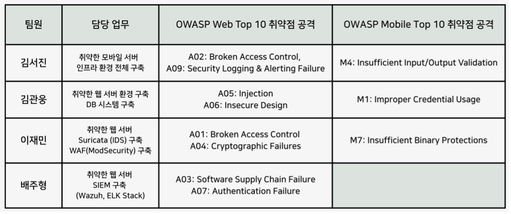

SecuriCare 의료 서비스 보안 취약점 진단 및 대응
1. 프로젝트 소개
가상의 병원 SecuriCare의 웹사이트와 모바일 애플리케이션을 대상으로 OWASP Top 10 기반의 취약점 진단 및 모의해킹을 수행하였다. 발견된 취약점을 실제 공격 시나리오로 재현하여 위험성을 검증하고, 시스템 설정 강화와 Suricata IDS 탐지 룰, ModSecurity WAF 차단 룰을 적용하였다. 이후 Wazuh와 ELK Stack을 활용해 보안 이벤트를 수집·분석하고, 동일한 공격을 재수행하여 방어 체계의 적용 결과를 검증하였다.
2. 프로젝트 목표
- OWASP Top 10 기반 웹/모바일 애플리케이션 취약점 식별
- 실제 공격 시나리오를 통한 취약점 영향도 및 PoC 검증
- Suricata와 ModSecurity를 활용한 공격 탐지·차단 체계 구축
- Wazuh + ELK Stack 기반 보안 로그 수집 및 분석
- 방어 적용 후 동일 공격을 재수행하여 대응 효과 검증
3. 전체 수행 과정
본 프로젝트는 다음과 같은 5단계 절차에 따라 순차적으로 진행되었다.
4. 사용 도구
| 구분 | 사용 도구 |
|---|---|
| 공격 플랫폼 | Kali Linux |
| 정보 수집 / 스캐닝 | Nmap, Gobuster, ffuf, OWASP ZAP, Nikto |
| 취약점 검증 / 공격 | curl, Python(자체 제작 DoS 스크립트), 웹 브라우저(Chrome, Edge) |
| 탐지 / 차단 | Suricata(IDS/IPS), ModSecurity(WAF) |
| 로그 통합 관제 | Wazuh, Elasticsearch, Kibana (ELK Stack), Filebeat |
5. 시스템 인프라 구성
1.6.1 Web 인프라 구성
Web 환경은 웹 애플리케이션 방화벽(ModSecurity)이 적용된 Apache/Nginx 기반 웹서버(192.168.16.43)를 최전단에 배치하여 애플리케이션 계층으로 유입되는 공격 트래픽을 1차로 차단한다. 그 뒤에는 별도의 Suricata IDS(192.168.16.30)를 두어 웹서버 단계를 우회할 수 있는 네트워크 구간의 이상 트래픽까지 실시간으로 탐지한다.

[그림 1] Web 시스템 인프라 구성도
1.6.2 Mobile 인프라 구성
Mobile 환경은 Nginx, ModSecurity(WAF), Suricata(IDS)가 구성된 게이트웨이(192.168.16.50)를 최전단에 배치하여 모바일 애플리케이션에서 유입되는 요청을 1차로 분석하고 공격 트래픽을 탐지·차단한다. 정상적으로 통과한 요청은 Node.js와 MySQL로 구성된 모바일 백엔드 서버(192.168.16.4)로 전달되어 데이터 처리를 수행한다.

[그림 2] Mobile 시스템 인프라 구성도
웹/모바일 점검 대상 및 환경
웹/모바일 서비스 페이지 구성도
웹/모바일 서비스 설계 개요
프로젝트 대상: 의료 관리 웹 애플리케이션
설계 목표: 환자(Patient)·의사(Doctor)·관리자(Admin) 3개 역할(Role) 기반 접근 제어가 적용된 서비스 구현
페이지 구조- 로그인 / 회원가입 : 모든 사용자가 접근 가능하며, 로그인 성공 시 역할에 따라 메뉴 분기
- 환자(Patient) 메뉴 : 예약 신청·취소·변경·조회, 게시판(오류/건의사항 등록, 파일 첨부), 진료 내역 조회
- 의사(Doctor) 메뉴 : 진료 일정 확인, 환자 진료 기록 작성, 처방 등록, 환자 병력·검사 결과 조회
- 관리자(Admin) 메뉴 : 사용자 계정 및 접근 권한 관리, 환자/의사 메뉴를 포함한 전 기능 접근
6. 팀 구성 및 역할 분담
인프라 구축, 취약점 분석, 대응체계 구축 및 검증 업무를 팀원별로 분담해 진행했습니다.
나의 주요 역할
■ 인프라 구축
- 모바일 환경 보안 인프라 전체 구축 (Nginx, ModSecurity, Suricata, Filebeat, Node.js, MySQL, Elasticsearch, Kibana)
- 웹/모바일 취약점 진단 및 공격 시나리오 재현
■ 대응 및 검증
- 시스템 설정 변경, Suricata 탐지 룰·ModSecurity 차단 룰 작성·적용
- 대응체계 적용 전/후 동일 공격 재수행, ELK 로그 분석으로 방어 효과 최종 검증

[그림 3] 팀 프로젝트 업무 분담 및 상세 역할
7. 모의해킹 결과 요약
사전 스캐닝 및 수동 모의해킹을 통해 식별된 취약점 리스트입니다.
| No | OWASP 분류 | 발견 취약점 | 위험도 | 조치상태 |
|---|---|---|---|---|
| 1 | [Web] A02 Security Misconfiguration | Directory Listing (주요 경로 노출) | 상 | 조치완료 |
| 2 | [Web] A02 Security Misconfiguration | Sensitive Information Disclosure (백업 파일 노출) | 상 | 조치완료 |
| 3 | [Web] A02 Security Misconfiguration | CSP Header Not Set → Stored XSS | 상 | 조치완료 |
| 4 | [Web] A09 Logging & Monitoring Failures | 권한 변경 등 주요 행위에 대한 감사로그 미기록 | 중 | 조치완료 |
| 5 | [Mobile] M4 Insufficient Input Validation | SQL Injection (인증 우회 및 권한 탈취) | 상 | 조치완료 |
| 6 | [Mobile] M4 Insufficient Input Validation | Buffer Overflow로 인한 서비스 거부(DoS) | 상 | 조치완료 |
결과 총평
• 총 6건의 실증 가능한(PoC 확보) 취약점이 최종 확인되었으며, 이 중 5건이 상(High), 1건이 중(Medium) 등급으로 평가되었다.
• 발견된 모든 취약점은 시스템 설정 변경, Suricata 탐지 룰, ModSecurity 차단 룰의 다계층 방어 체계를 통해 조치를 완료하였다.
• 조치 이후 동일한 공격 시나리오를 재수행한 결과, 전 항목에서 공격이 차단되고 IDS/WAF 로그가 정상적으로 기록됨을 확인하였다.
8. 방어 계층별 구축 현황
| 방어 계층 | 구축 내용 |
|---|---|
| 시스템 설정 | Apache Indexes 옵션 제거, CSP 보안 헤더 강제 적용, Body-parser 요청 크기 제한, MySQL general_log 활성화, 입력값 검증 로직 및 비효율적 루프 제거 |
| Suricata (IDS/IPS) | 총 10건의 커스텀 탐지 룰 작성 (백업 파일 접근, CSP 미설정, Stored XSS, SQL Injection 3종, DoS/Buffer Overflow 3종 등) |
| ModSecurity (WAF) | 총 10건 이상의 커스텀 차단 룰 작성 및 적용, 전 항목 403/400/413 응답을 통한 요청 단계 원천 차단 구현 |
| SIEM / 로그 관제 | Filebeat → Wazuh → Elasticsearch → Kibana 파이프라인을 통해 전 취약점의 공격·차단 로그 실시간 시각화, 자체 개발 관리자 모니터링 UI 구축 |
9. 결론
발견된 모든 취약점에 대해 시스템 설정 변경을 1차 방어선으로 적용하고, 다계층 방어 체계(Defense in Depth)를 구축하였다. 이후 동일한 공격을 재수행하여 모든 시나리오에서 공격이 차단되고 로그가 ELK Stack에 수집됨을 확인함으로써 대응체계의 실효성을 입증하였다. 특히 Kibana를 통한 시각화 및 모니터링 인터페이스 구축을 통해 지속 가능한 보안 운영 체계의 기반을 마련하였다는 데 의의가 있다.
10. 프로젝트를 통해 느낀 점
이를 해결하기 위해 공격 요청과 로그를 직접 비교하며 원인을 확인하고 룰을 수정하는 과정을 반복하면서, 보안은 단순히 솔루션을 설치하는 것이 아니라 환경에 맞게 설정하고 지속적으로 검증하는 과정이라는 점을 배웠습니다.